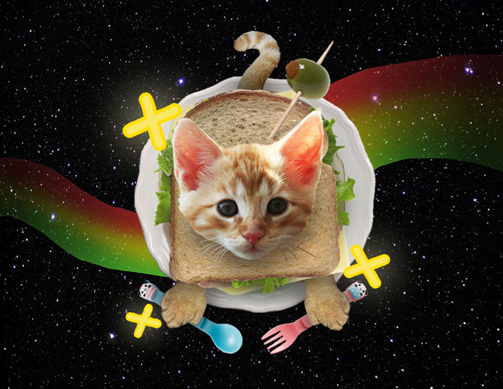

Space Kitty Sandwich

For this piece, I wanted to practice my photo manipulation skills in Adobe Photoshop.
It was fun to combine cartoon-like elements with realistic elements.
The realistic elements were found from photographs in the web, and include mainly the cat, sandwich ingredients, and the night sky background.
All of the cartoon elements, like the sparkles and the rainbow, were created using gradients or drawing tools in Photoshop itself.
I thought about making the piece colorful and bright to match the light-hearted subject matter I was working with.
Because there's nothing more fun and light-hearted than adventures in space with rainbows and sparkles and kittens of course
As a cat owner, I often see my cat resting in the cat loaf position, so turning a cat into a sandwich makes complete sense. The sandwich itself is actually constructed of different images layered on top of each other. The cat face is its own layer, then the bread, the lettuce, the cheese, the ham, and the plate. That's right, this isn't your average store-bought sandwich, it was artisanally crafted from the plate up with various organic internet ingredients. Just a heads up though, the sparkles and rainbow may or may not be organically composed.